Vi starter nede i foyeren.
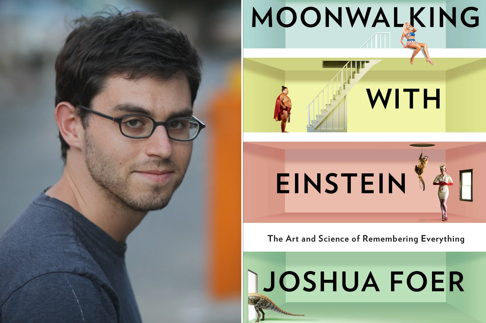
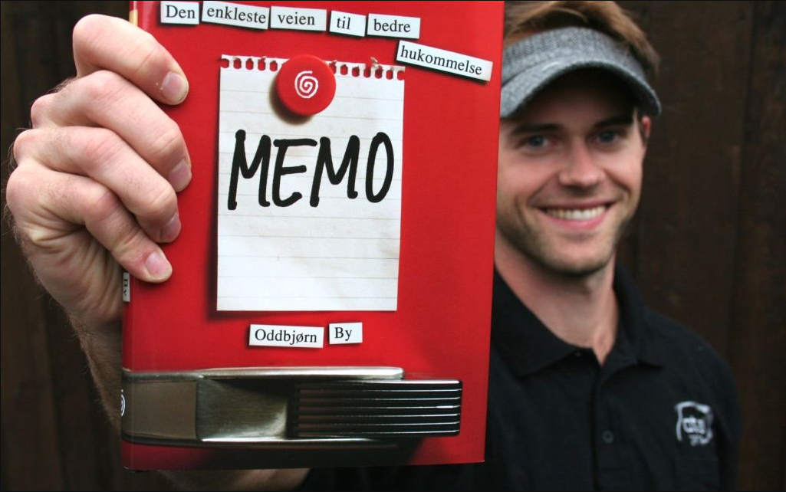
Hvad så I i indgangen til skolen?
Hvad så I til venstre for jer, da vi gik ud i skolegården?
Hvad var der sket med kældertrappen ned til fredagsbaren?
Hvem stod inde bag glasdørene?
Hvem stod oppe på taget over glasdørene?
Hvad skete der ovre ved buskadset?
Hvem kom ud fra buskadset?
Hvad skete der ved skoleporten?
Hvad var der midt i skolegården?
Hvem hjalp hinanden…
med at holde Mickeys bedste ven tilbage?
Hvad kan I nu huske for evigt?
Planeterne i solsystemet:
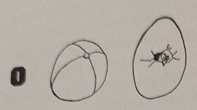
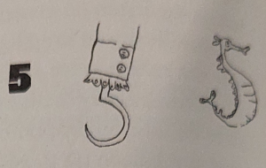
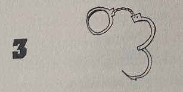
Hvad har I husket?
Vores mødetidspunkt 05:30!
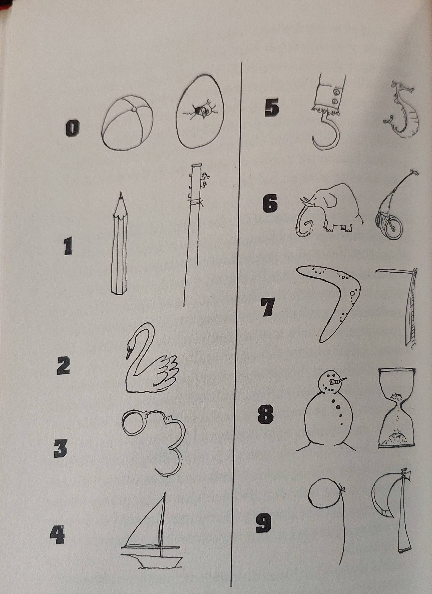
2
8
7
4
0
9
9
5
Lad os få rækkefølgen!
2
28
287
2874
28740
287409
2874099
28740995
Mit tlf.nr!
Oddbjørn Bys associationer
Lad os prøve det af
28
18
52
01
Det bliver til:
Alternativt: OITERSCLAg
Gå igennem hukommelsespaladset et sted ad gangen og genkald så billedet på stedet.
Ifm. studieturen skal I holde 2 oplæg.
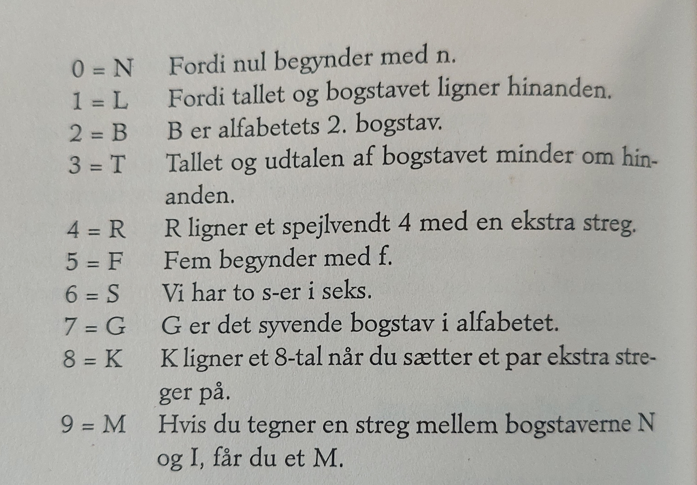
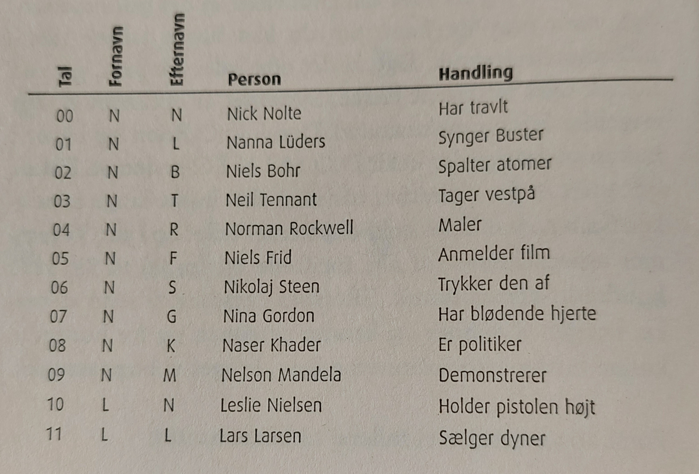
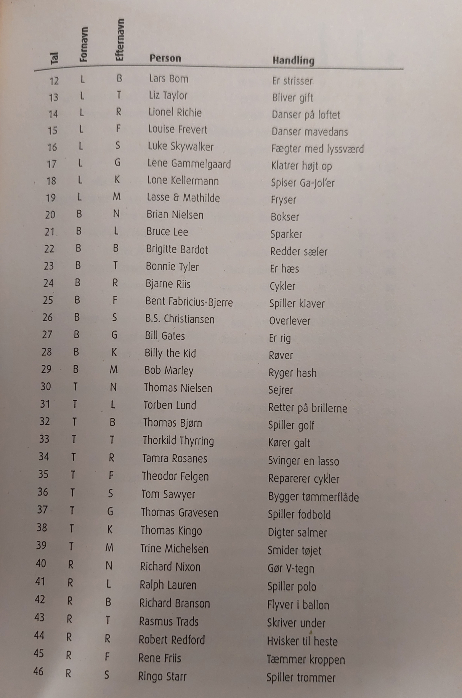
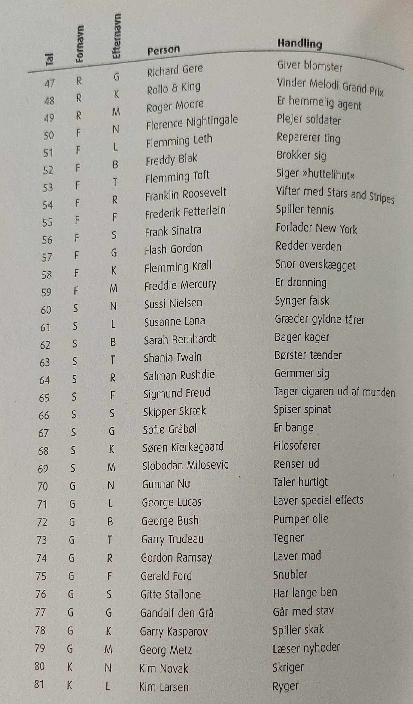
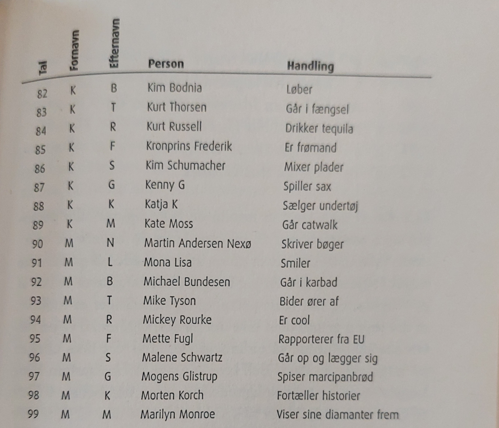
Vi skal huske \(\pi\)'s decimaler:
\(\pi\) = 3.14 15 92 65 35 89 \(\dots\)